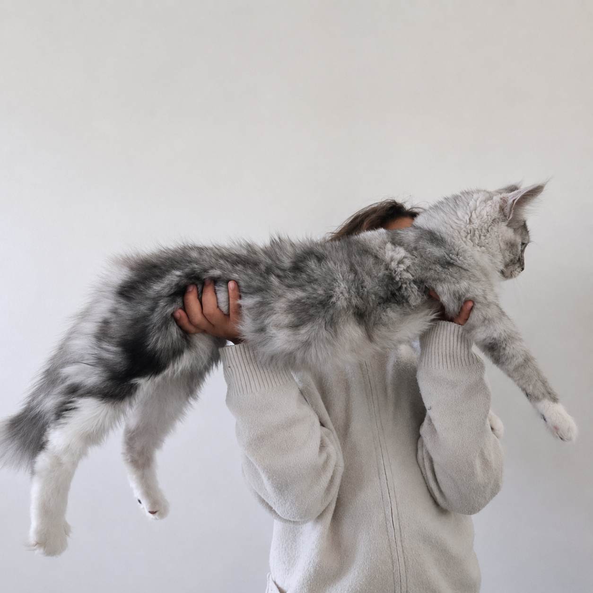

Mâle reproducteur
Aslan
« Le dernier roi du royaume »
À seulement 7 mois, Aslan impressionne déjà par son beau gabarit, son ossature puissante et sa morphologie typique du Maine Coon.
Issu de prestigieuses lignées russes et belges, il possède une génétique orientée vers les grands gabarits : son grand-père atteignait 13 kg et son père pesait déjà 9 kg à seulement 2 ans. Une lignée prometteuse lorsque l'on sait que le Maine Coon poursuit sa croissance jusqu'à environ 4 ans.
Espiègle, courageux et très affectueux, Aslan grandit au cœur de notre foyer familial. Nous suivons son évolution avec attention avant qu'il ne rejoigne, à sa pleine maturité, notre programme de reproduction.
Pédigré LOOF